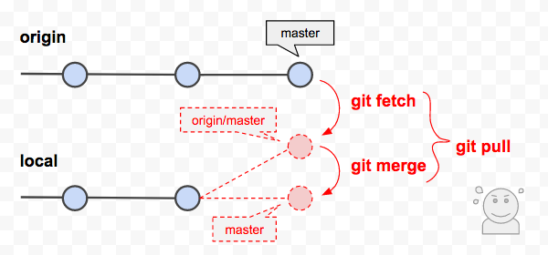

git pull 指令
拉回遠端 repo 最新版送交歷史紀錄，並 merge 到本地端 repo
git pull = git fetch + git merge

常用範例
| 範例 | 說明 |
|---|---|
| git pull | 將遠端的資料更新到本地端，並合併 |
| git pull --prune | prune remote-tracking branches no longer on remote |
語法結構
usage: git pull [<options>] [<repository> [<refspec>...]]
-v, --verbose be more verbose
-q, --quiet be more quiet
--progress force progress reporting
Options related to merging
-r, --rebase[=<false|true|preserve>]
incorporate changes by rebasing rather than merging
-n do not show a diffstat at the end of the merge
--stat show a diffstat at the end of the merge
--log[=<n>] add (at most <n>) entries from shortlog to merge commit message
--squash create a single commit instead of doing a merge
--commit perform a commit if the merge succeeds (default)
--edit edit message before committing
--ff allow fast-forward
--ff-only abort if fast-forward is not possible
--verify-signatures verify that the named commit has a valid GPG signature
-s, --strategy <strategy>
merge strategy to use
-X, --strategy-option <option=value>
option for selected merge strategy
-S, --gpg-sign[=<key-id>]
GPG sign commit
Options related to fetching
--all fetch from all remotes
-a, --append append to .git/FETCH_HEAD instead of overwriting
--upload-pack <path> path to upload pack on remote end
-f, --force force overwrite of local branch
-t, --tags fetch all tags and associated objects
-p, --prune prune remote-tracking branches no longer on remote
--recurse-submodules[=<on-demand>]
control recursive fetching of submodules
--dry-run dry run
-k, --keep keep downloaded pack
--depth <depth> deepen history of shallow clone
--unshallow convert to a complete repository
--update-shallow accept refs that update .git/shallow
--refmap <refmap> specify fetch refmap